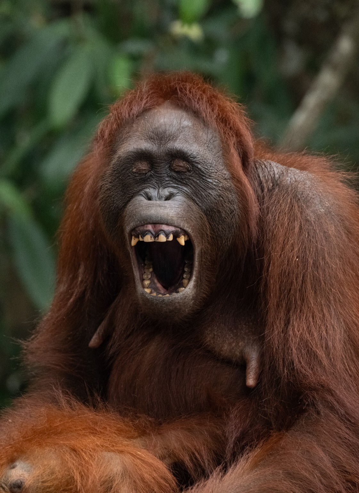

Day 01 · Arrival
Arrival & river journey
Meet your local team, transfer to the harbour, board your klotok and begin cruising into the rainforest. Settle in and enjoy the river scenery.
From a first taste of the rainforest to a slower, deeper expedition, find the journey that fits your plans.

Expedition guide · 02
Routes, stops and wildlife sightings depend on park regulations, weather, river conditions and wildlife welfare. Final details are confirmed with your trip plan.
A sample outline for the classic 3D2N journey. Your final itinerary will be confirmed with your trip details and current park conditions.
Meet your local team, transfer to the harbour, board your klotok and begin cruising into the rainforest. Settle in and enjoy the river scenery.
Visit designated orangutan observation areas, with time to learn about the forest and its wildlife. Return to the boat for an evening surrounded by nature.
Enjoy the quiet atmosphere of the river before returning to the harbour for your onward transfer.
Wildlife sightings are never guaranteed. All visits follow park regulations and guidance from local guides and park staff.
Tell us your preferred dates, group size and expedition length.